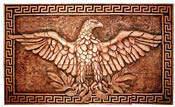
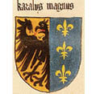
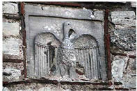

Papa’yı da Döverler
799 yılında Roma’daki Papalık makamı, müthiş bir komployla sarsıldı. Aziz Marko’ya adanan 25 Nisan günü, geleneksel ayin kafilesinin önünde at süren Papa Leo, iki saldırganın hışmına uğradı. Leo’yu atından düşürdüler, dövdüler ve üstündeki Papalık kıyafetini parçaladılar. Saldırganlar, bir önceki Papa Hadrianus’un yeğenleri olmakla, seçkin kişilerdi.
Amcalarının yerini alan Leo’yu, Hıristiyan imanını inkâr ile küfürden, fuhuş ve zina günahı işlemeye, birbirinden ağır cürümlerle suçluyorlardı. Leo’nun gözlerini oyup dilini kesmeye kararlıydılar. İddialar vahim ve halkı galeyana getirebilecek nitelikteydi.
Saldırganların elinden kurtarılıp yargılanmak üzere bir manastıra kapatılan Leo’nun imdadına Şarlman’ın Roma’da görevli temsilcileri yetişti. Papayı manastırdan alıp 200 kişilik bir maiyetle Saksonya’da bulunan Şarlman’ın yanına gönderdiler.
Gerek esas, gerekse usülde, İsa’nın yeryüzündeki temsilcisi sayılan Papa’yı ancak ve yalnız Doğu Roma İmparatoru yargılayabilirdi. Ne var ki o sırada, Konstantinopolis tahtında bir imparator değil bir imparatoriçe vardı: İrene.
Oysa Şarlman ve Papa Leo, bir kadının “imparator” olamayacağı konusunda hemfikirdiler. Bu fikri, Frankların ilk Hıristiyan Kralı Clovis’in 6. yüzyılda yürürlüğe koyduğu ve “Salien Kanunu” diye anılan temel yasanın, kadınlara emperyal makamı yasakladığı gerekçesine dayandırıyorlardı.
İmparatoriçe İrene’nin, Pontifex Maximus yetkisini böylece reddeden Şarlman, kendi makamının da Papa’yı yargılamak meşruiyetine sahip olmadığının bilincindeydi. Ama Leo, Roma’da kendisine yöneltilen çok ağır suçlamalardan aklanmazsa zaten imparator yokluğu çeken Hıristiyan Avrupa, üstüne bir de Papa’sız kalacaktı.
Şarlman, ne yapıp edip Leo’yu suçsuz çıkarmalı ama bunu meşru bir düzeneğe dayandırmalıydı.
Padenborn’daki sarayına krallığın ve Kilise’nin üst düzey temsilcilerinden oluşan bir Yüksek Kurul topladı. Sarayda bir ay kalan Papa Leo, bu süre içinde Şarlman başkanlığındaki Yüksek Kurul tarafından uzun uzun sorgulandı. Bir yandan da Şarlman’la ikili görüşmeler yapıyordu.
Tarih sayfalarında Kral ve Papa’nın baş başa neler konuştuğuna ilişkin herhangi bir kayıt yok. Ama Şarlman’ın imparator olmasının bu görüşmelerde kararlaştırıldığı tahmin ediliyor. Öte yandan, pazarlıkta anlaşmış olmalılar ki, bir ayın sonunda masumiyetine yemin eden Leo’nun sözünü senet sayan Yüksek Kurul, kendisini tüm suçlamalardan akladı.
799 sonbaharında Şarlman’ın müfterileri soruşturmak ve cezalandırmakla görevlendirdiği silahlı külahlı Frank Piskoposları eşliğinde Roma’ya dönen Papa Leo, gayet iyi karşılandı.
Aradan bir yıl geçti.
Şarlman, toplam kırk altı yıl sürecek hükmünün otuz ikinci kışına girmişti. Taç giyme töreni, dokuzuncu yüzyılın ilk Noeli, İsa’nın kutsal doğum gününe denk getirildi.
Günümüzde Almanya, Belçika, Fransa, Hollanda, İtalya ve Lüksemburg’u kapsayan toprakların tek hâkimi Frank Kralı, saray erkânıyla birlikte Roma’ya geldi.
25 Aralık 800 günü Aziz Petrus (San Pietro) Bazilikası’nda düzenlenen tören, her anlamda görkemliydi. Papa Leo, bazilikayı tıklım tıklım dolduran Frank soyluları ile ruhban sınıfı ileri gelenlerinin huzurunda, Şarlman’ı o güne kadar var olmayan “Romalıların İmparatoru” ünvanıyla taçlandırdı.
Aslı “Roma İmparatoru” olan ünvanın ve tacın sahibi emperyal başkent Konstantinopolis tahtındaki İmparatoriçe İrene olduğundan; Şarlman’a özel bir ünvan uydurmak gerekmişti.
Dört yüz yıldır hükümdar yokluğu çeken Avrupa, sonunda imparatoruna kavuşmuştu. Doğrusunu söylemek gerekirse, Büyük Şarl/Karolus Magnus, emperyal tahtını çoktan hak ediyordu: Yarı kabile bir devlet olan Frank Krallığı’nı “Kutsal Roma Germen İmparatorluğu”na dönüştürmekle, Birleşik Roma’dan beri ilk kez siyasal bir Avrupa Birliği sağlamıştı.18
Dahası, bu birliğe ortak “din dili” olarak kabul ettirdiği Latince, Avrupa’nın bir ucundan ötekine yayılmıştı. İngiltere’den Almanya’ya tüm ruhban ve bilginler, artık Latince konuşarak, yazarak anlaşıyorlardı. Bu durum ileriki yüzyıllarda halkların konuştuğu değişik dillerin, hiç olmazsa aynı alfabe, Latin alfabesiyle yazılmasını sağlayacaktı.
Yeni imparatorun arması, başı sola dönük Roma Kartalı’ydı. Şarlman, böylece ilk Hıristiyan Frank Kralı Klovis’in simgesi “zambak” olan Merovenj Hanedanı’yla ilişkisini kesiyor ve kendi Frank Hanedanı Karolenjleri, Antik Roma’nın emperyal devamı olmak iddiasıyla donatıyordu.
Klovis’in arması Zambak
Ne var ki tarih, ileriki yüzyıllarda Fransız aristokrasini yeniden “zambak”la betimleyecek, zaten son Fransız kralının kafası da savunmasız bir zambak çiçeği gibi biçilecekti.
Şarlman’ın imparator tacını giymesiyle, Antik Roma mülkü 9. yüzyılın başında fiilen üç rakip devlete bölünmüş oldu: Doğu Roma İmparatorluğu (Konstantinopolis), Arap İmparatorluğu (Bağdat) ve Karolenj İmparatorluğu (Aachen).

Roma Kartalı

Şarlman’ın arması

Yedikule’den çalınan Roma Kartalı
Bir bölünmenin ötesinde, Akdeniz’i çevreleyen eski imparatorluktan yeni bir dünya, yeni acılara doğuyordu. Akdeniz’i üç özgün kültür arasında bölen ve çoğu kez birbiriyle çatıştıran bu ayrışım, günümüzde de sürmektedir.
Düşünün ki Avrupa’nın tarihini yazacak ve tüm dünyanın kaderini etkileyecek olgu, Papa’nın Şarlman’ı “Romalıların İmparatoru” ilan edebilme yetkisiydi. Papa Leo hangi meşruiyete dayandırıyordu bu yetkiyi? Baştan sona sahte bir belgeye, Papalık makamının meşruiyetini sağlayıp mülkünün tapusunu sunan vasiyete, Konstantin’in çakma bağışına!
Yeryüzünde gelmiş geçmiş tüm jeopolitik oluşumlar, egemenlikler ve hatta iktidar ünvanları, rakip güçler arasındaki savaşlar ya da anlaşmaların sonuçlarıdır. Bu savaş ve anlaşmaların temelinde çok yalan vardır. Soyluluk ünvanları dahil hemen tüm egemenlik meşruiyetleri sahte öykülere, efsanelere dayanır. En meşru efsane zemini de dindir. Dolayısıyla jeopolitik oluşumların kaynağına inildiğinde, mutlaka dine dair bir yalan bulunur. Bu yalan, ya kutsal kitabın duruma göre ayarlanan bir yorumudur ya da tahrifatı. İstisnasız tüm dinler iktidar savaşlarının aleti olmuş, hiçbirisi egemenlerin manipülasyonundan kurtulamamıştır.
Ama tarih boyunca dinleri jeopolitik çıkarlara uygun hale getiren bu yalanların hiçbiri, insanlığın geleceğini Büyük Konstantin’in sahte vasiyeti kadar etkilememiş, dünyanın siyasal coğrafyasını böylesine derinden ve kalıcı olarak biçimlememiştir.
İşte bu yüzdendir ki “Donatio Constantini” başlığıyla Vatikan’ın gizli arşivlerinde yer alan “Konstantin’in Bağışı” belgesi, dünya tarihinin en büyük sahtekârlığı, Avrupa’yı Asya’dan ayıran siyasal coğrafyanın temel yalanıdır.
Çağdaşı egemenlerin hepsine hem boyu bosu hem de iktidar gücü ve zenginliğiyle fark atan Şarlman’a taç giydiren Papa Leo, Avrupa’ya bir imparator armağan etmekle kalmıyor, makamına kendisinden sonra oturacak papaları da “imparator tayin etme” yetkisiyle donatıyordu!
Bütün bunlar, Konstantin’in sahte vasiyetine sözlü atıfla yapılıyordu. Çok akıllıca, belki de tarihin ilk ve en başarılı PR operasyonu gerçekleştiriliyordu: Yazılı halini zaten çok az kimsenin gördüğü düzmece bağış belgesi, toplumsal belleğe önce sözlü atıflarla yerleştirildi. “Kırk kez söylersen olur” benzeri bir taktikle zaman içinde sözüne alışılıp varlığı tartışılmaz hale gelince, yani yıllar sonra Papalık fetvalarının arasına katılacak ve yazılı dogma statüsüne kavuşacaktı.
Ama o zamana, daha zaman vardı.
18 Avrupa tarihinin ortak efsanesi Şarlman, 19. yüzyılda Victor Hugo’nun yazdığı La Légende des siécles (Yüzyılların Efsanesi) kitabından öteye birleşik bir Avrupa hayalinin atası olarak tanıtıldı. İkinci Dünya Savaşı’ndan sonra Avrupa Topluluğu’nun kurucu üyeleri, bu atalığı yeniden ortaya attı. Gerçekten de AB’nin temelini oluşturan Roma Sözleşmesi’ni imzalayan ülkeler, tam da Şarlman’ın kurduğu imparatorluğun üyeleriydi: Almanya, Fransa, Belçika, Hollanda, İtalya ve Lüksemburg. Günümüzde, kurduğu imparatorluğun Avrupa’da bir Frank egemenliği olduğunu ileri süren kimi tarihçiler, “AB’nin atası Şarlman” fikrine karşı çıkıyor ve ona daha çok Napolyon’un Avrupa’yı işgalle kurduğu kısa ömürlü imparatorluğun fikir babalığını yakıştırıyorlar.